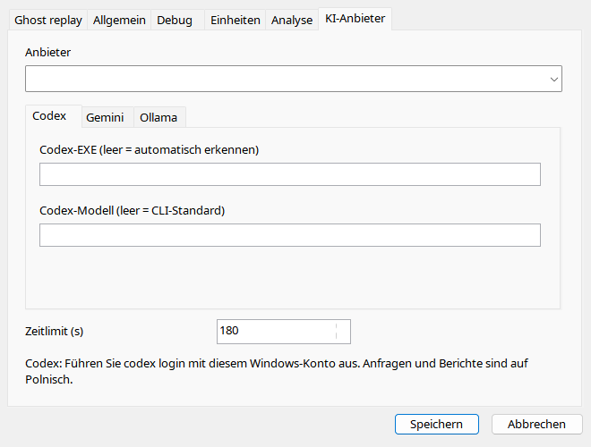
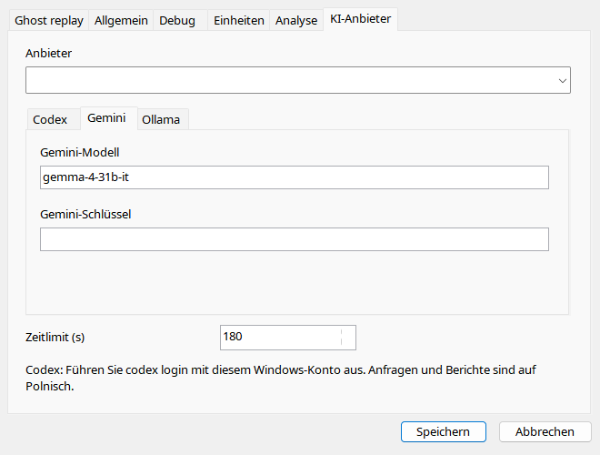
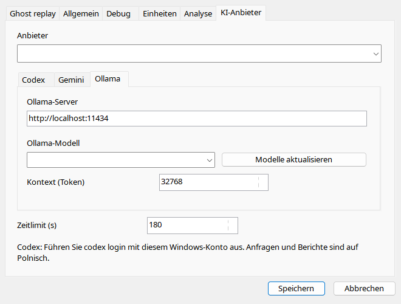

Wählen Sie Anbieter und Register. Codex benötigt natives CLI und eigene Anmeldung; EXE meint keinen Wrapper. Gemini braucht Schlüssel/Modell. Ollama benötigt erreichbaren Server mit installiertem Modell; Aktualisieren lädt keine Gewichte. Timeout begrenzt Warten, nicht zwingend Serververarbeitung. Teilen Sie keine persönliche INI mit Schlüsseln.
| Option / Aktion | Verhalten und Einschränkungen |
|---|---|
| Anbieter | Codex/Gemini/Ollama; Felder erzeugen kein Konto. |
| Timeout | 1–1800 s, Standard 180; beendet Warten, beweist nicht, dass Cloud keine Daten erhielt. |
| Codex EXE | Leer erkennt native codex.exe; keine .cmd/.ps1-Wrapper. CLI separat anmelden. |
| Codex-Modell | Leer verwendet CLI-Standard; Override muss verfügbar sein. |
| Gemini | Modellkennung und API-Schlüssel; persönliche settings.ini niemals mit Schlüssel weitergeben. |
| Ollama-Server | Standard http://localhost:11434; erreichbarer Server statt Downloadseite. |
| Modell / Aktualisieren | Installierte Servermodelle auflisten; lädt keine Gewichte herunter. |
| Kontext | 2048–262144 Tokens, Standard 32768; abhängig von Modell, Konfiguration und Speicher. |
| Antwortsprache | Aktuelle Anwendungssprache im Prompt für jeden Anbieter, Kennungen unverändert. |


